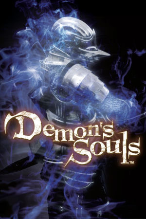

PlayStation 3, PlayStation 5
Originally released on February 5th, 2009 for the PlayStation 3,Demon's Souls was developed by FromSoftware and published by Sony Computer Entertainment. Directed by Hidetaka Miyazaki, the game is a dark fantasy action RPG set in the kingdom of Boletaria, which is being consumed by a colorless fog filled with demons. Gameplay revolves around methodical, punishing combat where every enemy can kill an unwary player, a resource called souls that doubles as both experience and currency and is dropped where you die, and a uniquely connected world of five sprawling stages that unlock in any order. Its online features were pioneering for their time: players could leave hint messages, see ghostly echoes of other players, and even invade one another's worlds as phantoms.
The idea for the shared online experience came to Miyazaki from a real moment: while driving through a heavy snowstorm, his car got stuck on a hill, and a group of strangers appeared and helped push him free before driving off without a word; an act of spontaneous, unspoken cooperation he wanted players to feel in the game itself. Behind the scenes, Demon's Souls began as a troubled project. Considered a failure internally at FromSoftware, it was handed to the then-unknown Miyazaki, who transformed it into the game that launched a genre.
Despite modest expectations and an initial lack of a Western publisher, Demon's Souls became a sleeper hit thanks to word of mouth, and it is widely credited with founding the "Soulslike" genre. Its success set the template FromSoftware refined in Dark Souls (2011) and its sequels, Bloodborne, Sekiro, and Elden Ring, establishing conventions like bonfire-style checkpoints, demanding boss fights, and environmental storytelling. In 2020, Bluepoint Games released a critically acclaimed full remake for the PlayStation 5 launch, rebuilt with modern visuals and audio that introduced the game to a huge new audience, though the artstyle was changed quite a lot from the original vision. Demon's Souls remains one of the most influential games of its generation and the origin point of one of gaming's most celebrated design traditions.
FromSoftware
- Official developer website.
Demons Souls Wiki
- Contains lots of useful information about Demons Souls.
Demons Souls Fextralife Wiki
- Another wiki that contains lots of useful information about Demons Souls.
Demons Souls Wikidot
- Yet another wiki with more information about Demons Souls.
The Archstones -
Community-run private server for the original PS3 game's online play, also supporting online play on
RPCS3.
RPCS3 - The best PS3 emulator, perfectly able to play Demons Souls.
Steam Grid DB (DeS) - Contains lots of cool options for artwork that can be used in your Steam library.